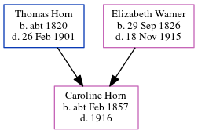

Caroline Horn cFeb 1857 - 1916
[ Home ] | [ Calendar ] | [ Surnames Index ] | [ Errors ] | [ Family History ]A domestic cook and the child of Thomas Horn (a farm bailiff) and Elizabeth Warner (a general shopkeeper), Caroline Horn, the great-great-aunt of Nigel Horne, was born in St Peters, Thanet, Kent, England c. Feb 18571,2,3,4,5,6 and baptised there on 8 Mar 1857.
During her life, she was living at her birthplace in 18711; in Ramsgate, Kent, England in 18812; at Mount Albion Mews, St Lawrence, Thanet, Kent on 5 Apr 18918; at 3 Elms Park Terrace in Ramsgate on 31 Mar 190110 - less than a mile from her nephew Isaac Horne who was living at 15 Haine Cottages, St Lawrence, Thanet, Kent and her nephew Charles Horne, nephew Edmund Horne and brother Charles Horn who were living at 15 Haine Cottages, St Lawrence, Thanet, Kent -; and at 23 Northdown Road, St Peters, Thanet, Kent on 2 Apr 19114 on the same road as her mother who was living at Elder Cottage, 23 Northdown Road.
She died in 1916 in Thanet, Kent, England7 (apr/May/Jun).
Parents
- Thomas was born c. 1820
- Elizabeth Ann was born on 29 Sept 1826
Citations
- 1871 England Census Online publication - Provo, UT, USA: The Generations Network, Inc., 2004.Original data - Census Returns of England and Wales, 1871. Kew, Surrey, England: The National Archives of the UK (TNA): Public Record Office (PRO), 1871. Data imaged from the National
- 1881 England Census Online publication - Provo, UT, USA: The Generations Network, Inc., 2004. 1881 British Isles Census Index provided by The Church of Jesus Christ of Latter-day Saints © Copyright 1999 Intellectual Reserve, Inc. All rights reserved. All use is subject to the
- 1891 England Census Online publication - Provo, UT, USA: The Generations Network, Inc., 2005.Original data - Census Returns of England and Wales, 1891. Kew, Surrey, England: The National Archives of the UK (TNA): Public Record Office (PRO), 1891. Data imaged from The National
- 1911 England Census Online publication - Provo, UT, USA: Ancestry.com Operations, Inc., 2011.Original data - Census Returns of England and Wales, 1911. Kew, Surrey, England: The National Archives of the UK (TNA), 1911. Data imaged from the National Archives, London, England.
- England & Wales births 1837-2006 - Findmypast
- England & Wales, FreeBMD Birth Index, 1837-1915 Online publication - Provo, UT, USA: The Generations Network, Inc., 2006.Original data - General Register Office. England and Wales Civil Registration Indexes. London, England: General Register Office. © Crown copyright. Published by permission of the Cont
- England & Wales, Death Index: 1984-2005 Online publication - Provo, UT, USA: The Generations Network, Inc., 2007.Original data - General Register Office. England and Wales Civil Registration Indexes. London, England: General Register Office. © Crown copyright. Published by permission of the Cont
- 1891 England, Wales & Scotland Census - Findmypast (was age 33 and a servant in the household)
- 1911 Census for England & Wales - Findmypast (was age 54 and the daughter of the head of the household)
- 1901 England, Wales & Scotland Census - Findmypast (was age 46 and a servant in the household)
Media
1911 England, Wales & Scotland Census Transcription - GBC-1911-RG14-04507-0405-2
England & Wales births 1837-2006 Transcription - BMD-B-1857-1-FM-000547-029
England, Births & Baptisms 1538-1975 Transcription - R_884662887
England, Births & Baptisms 1538-1975 Transcription - R_938028881
1891 England, Wales & Scotland Census - GBC/1891/0005901860
1911 Census for England & Wales - GBC/1911/RG14/04507/0405/3
1901 England, Wales & Scotland Census - GBC/1901/0007761203
Family Tree
Map
Generated by ged2site. Last updated on Jul 3, 2024
Known Issues
Parent Elizabeth is listed in the residence for 7 Apr 1861, but this child is not
1871: Not living with either parent in childhood when aged 14